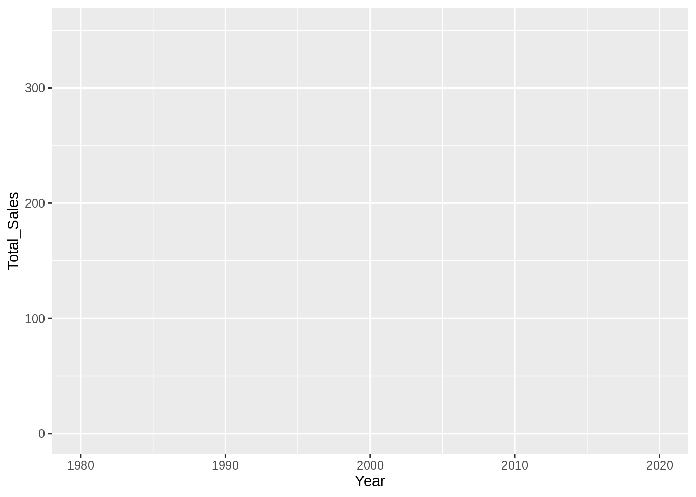
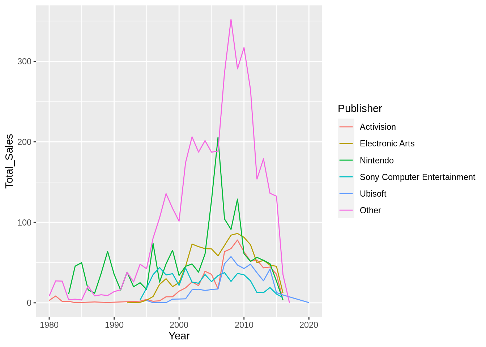
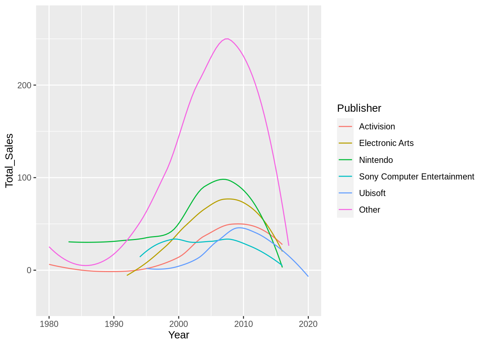
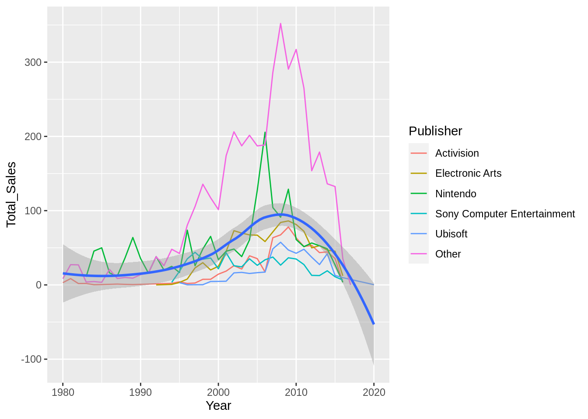
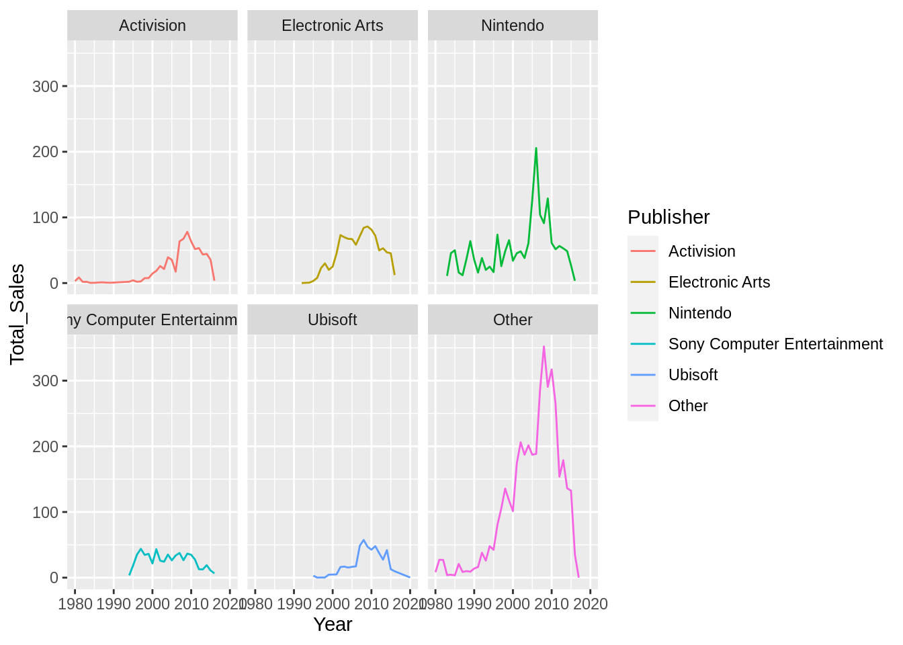
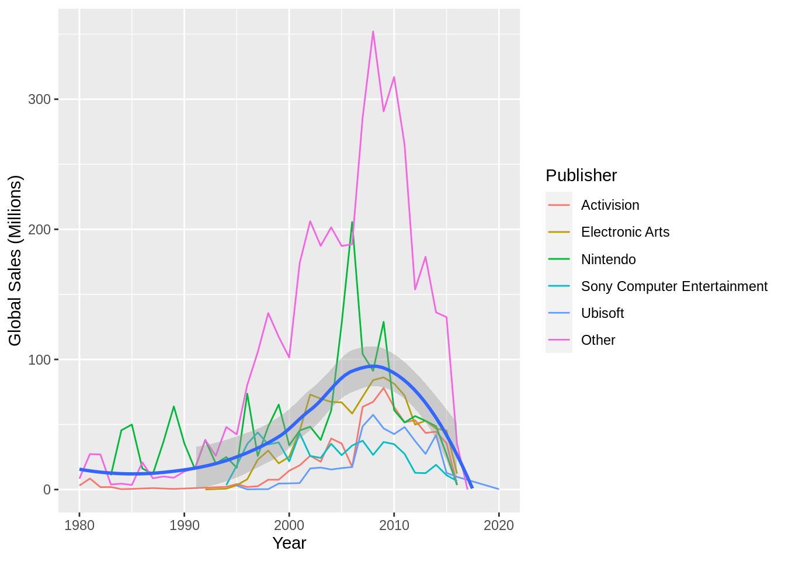
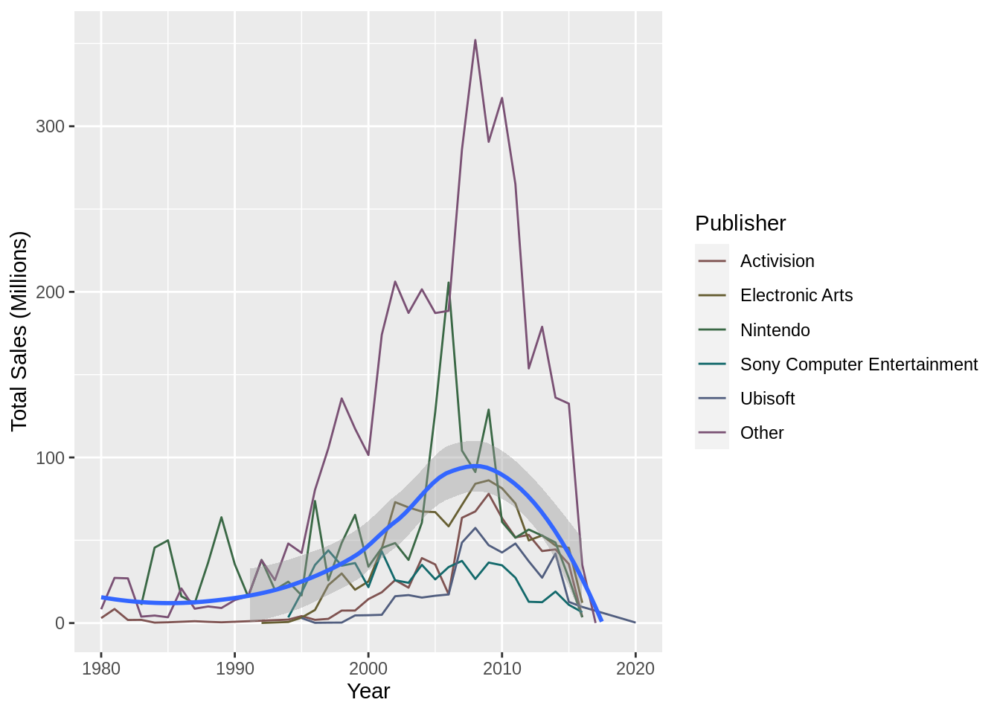

13.1 ggplot2
{ggplot2} is based on the concept of a Grammar of Graphics. This is the concept that, like language, graphics have a grammar that allow us to describe their components.
This concept was originally proposed by Leland Wilkinson, but has been adopted heavily in the {ggplot2} philosophy, with Hadley Wickham publishing a paper titled ‘A Layered Grammer of Graphics’ that outlines his proposal for a layered grammar and how it’s implemented in {ggplot2}. We’ll cover the real basics of {ggplot2} here but I’d recommend reading the paper and reading the {ggplot2} documentation if you’re interested in gaining a deeper understanding.
13.1.1 Components
At the core of the Grammar of Graphics philosophy is the idea that plots are defined by their components. For example, two scatterplots could be extremely different, even though we’d both call them scatterplots. Instead, the two graphics are better defined by the components that make them up.
When we create a plot using {ggplot2} we build it up by creating and combining these components.
The main components that make up a plot are:
- Data and aesthetics mappings
- Scales
- Geometrics objects (or geoms)
- Facets
These sound really scary, but they’re actually super simple. Let’s look at each one.
13.1.1.1 Data and aesthetic mappings
Every plot is a representation of some data. Therefore, to have a graphic, you need some data. That’s simple enough.
But which parts of the data should be shown on the plot and where? This is what our aesthetic mappings represent. We might have a dataset with two variables, z and w. Our mapping may be then that we want the z variable on the x axis of the plot, and the w variable on the y axis. We can also utilise other mappings like colour and size.
To define our dataset and our aesthetic mappings using {ggplot2}, we use the ggplot() and aes() functions. Let’s see an example using our video game sales experiment from the previous chapters:
library(ggplot2)
ggplot(smmrsd_vg_sales, mapping = aes(x = Year, y = Total_Sales, colour = Publisher))
Here we’ve defined that we want to show the Year on the X axis, the Total_Global_Sales on the Y, and we want to map the Publisher to the colour of whatever we show on the plot.
As part of our mapping, we can see that {ggplot2} has also provided appropriate scales for our variables. It’s provided a numeric scale with an appropriate range for the X and Y axis. We can’t see it yet, but it’s also assigned a scale to our colour aesthetic, mapping colours to values in the Publisher column. We’ll look at manually specifying and customising the scales later.
Although we’ve got our scales, and we can see that {ggplot2} clearly knows which variable we want on each axis, but there’s nothing on the graph at the moment… This is because we now need to define our geoms.
13.1.1.1.1 Geometric objects (geoms)
Our geometric objects will be the object that’s actually shown on the plot (e.g. bars, points, lines, and so on). To add our geometric object, we use the geom_... functions. Our geom will then inherit the mapping from our ggplot() call. If we wanted to add additional mappings, the geom_... functions also allow for a mapping parameter where additional mappings can be provided.
We want lines for our example, so we use the geom_line() function. To add our geom component, we just need to add it to our plot so far using the + operator:
ggplot(smmrsd_vg_sales, mapping = aes(x = Year, y = Total_Sales, colour = Publisher)) +
geom_line()
This is equivalent to:
ggplot(smmrsd_vg_sales) +
geom_line(mapping = aes(x = Year, y = Total_Sales, colour = Publisher))Different geoms also allow for different mappings. For example, the line geom allows you to specify the linetype aesthetic that changes the way the line is drawn (solid, dashed, etc.) depending on the value of your variable. This aesthetic would mean nothing for the point geom however, which instead has an aesthetic called shape. To see which aesthetics are supported by which geoms, look at the documentation for the geom function you want to use (e.g ?geom_point).
13.1.2 Stats
For a data point to be shown on the plot, it can go through a statistical transformation or ‘stat’ which is set via the stat parameter of our geom_... function. We can see that when we call geom_point() the default value for the stat parameter is ‘identity’. This means that {ggplot2} performs no stat transformation on the data before it plots it.
We can change this however, so that some form of stat is done on the data before it’s plotted. For example, if we set the stat parameter to ‘smooth’, the values are transformed by a smoothing function (the function can be changed via the method parameter):
ggplot(smmrsd_vg_sales) +
geom_line(mapping = aes(x = Year, y = Total_Sales, colour = Publisher), stat = "smooth")## `geom_smooth()` using method = 'loess' and formula 'y ~ x'
This call is equivalent to using the geom_smooth() function.
13.1.3 Layers
Together, the data, mapping, stat and geom components form a layer. A plot can be made up of multiple layers. For example, let’s show the same data but overlay a regression line that uses a different stat and a different mapping:
ggplot(smmrsd_vg_sales, mapping = aes(x = Year, y = Total_Sales)) +
geom_line(mapping = aes(colour = Publisher)) +
geom_smooth(method = "loess", formula = y ~ x)
We’ve now got two layers to this plot, with slightly different mappings and stats. The colours lines are split by Publisher, but the regression line does not use that colour mapping, meaning that we have one line for all the Publishers. The coloured lines also have no stat transformation, where the regression line does use a stat transformation - it calculates a smooth conditional mean of y given x (y ~ x). In fact, we could even change the dataset for the two layers if we wanted to.
In summary, a layer is made up of:
- A dataset and aesthetic mapping (aes)
- A statistical transformation (stat)
- A geometric object (geom)
And plots can be made of up one or more layers.
13.1.3.1 Facet
In our example, we’ve shown the Publisher column as a mapping to the colour aesthetic, but we could also use faceting. Faceting splits the original dataset, plots the data separately and then combines it into a single panel. To facet our plot, we use the facet_wrap() or facet_grid() functions:
ggplot(smmrsd_vg_sales, mapping = aes(x = Year, y = Total_Sales, colour = Publisher)) +
geom_line() +
facet_wrap(~Publisher)
Facets are not features of layers, but instead are universal to the plot.
13.1.4 Scales
{ggplot2} has created default scales for the variables in our mapping, but we can alter them manually. To do so, we just use the accompanying scale_{aesthetic}_{type} function. So for our x axis, we’re scaling our x mapping and we want a continuous, numeric scale so we would use the scale_x_continous() function. Similarly, for our y axis we’d use scale_y_continuous():
ggplot(smmrsd_vg_sales, mapping = aes(x = Year, y = Total_Sales)) +
geom_line(mapping = aes(colour = Publisher)) +
geom_smooth(method = "loess", formula = y ~ x) +
scale_x_continuous(name = "Year") +
# Let's change the limits to stop at 0
scale_y_continuous(name = "Total Sales (Millions)", limits = c(0, NA))To change the colour scale, we would use the scale_colour_brewer/hue() function. These two functions take a slightly different approach in how they assign colours to the levels of the variable.
ggplot(smmrsd_vg_sales, mapping = aes(x = Year, y = Total_Sales)) +
geom_line(mapping = aes(colour = Publisher)) +
geom_smooth(method = "loess", formula = y ~ x) +
scale_x_continuous(name = "Year") +
scale_y_continuous(name = "Total Sales (Millions)", limits = c(0, NA)) +
scale_colour_brewer(name = "Publisher", palette = "BrBG")## Warning: Removed 5 rows containing missing values (geom_smooth).
ggplot(smmrsd_vg_sales, mapping = aes(x = Year, y = Total_Sales)) +
geom_line(mapping = aes(colour = Publisher)) +
geom_smooth(method = "loess", formula = y ~ x) +
scale_x_continuous(name = "Year") +
scale_y_continuous(name = "Total Sales (Millions)", limits = c(0, NA)) +
scale_colour_hue(name = "Publisher", l = 40, c = 30)## Warning: Removed 5 rows containing missing values (geom_smooth).
Scales, like facets, are not components of layers. They will be constant across all layers in the plot.